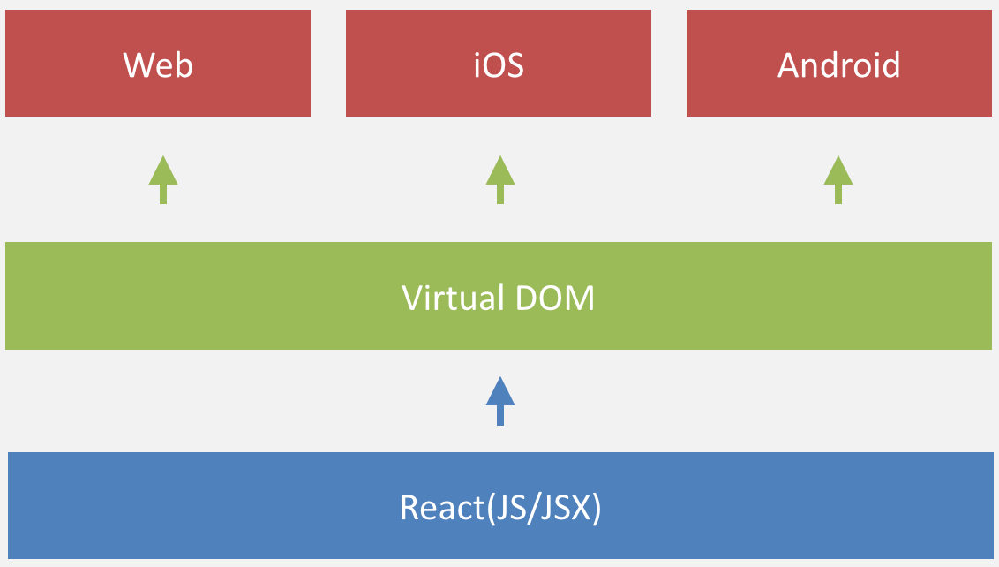

- 前端工程化-基础篇
- React Native概述：背景、规划和风险
前端工程化-基础篇
- 第一阶段：库/框架选型
- 第二阶段：简单构建优化
- 第三阶段：JS/CSS模块化开发
- 第四阶段：组件化开发与资源管理
- 第五阶段：基于product/infrastructure的全栈开发
前端，是一种GUI软件

大部分人认为前端就是html css jquery，那是上世代的前端。但这样的前端目前仍然是主流需求
库/框架选型

基本上现在没有人完全从0开始做网站，哪怕是政府项目用个jquery都很正常吧，React/Angularjs等框架横空出世，解放了不少生产力，合理的技术选型可以为项目节省许多工程量这点毋庸置疑
简单构建优化
新世代的前端的一个基本特征是引入了build system。以前这种东西跟web毫无关系。但随着复杂度的越来越高，没有build的脚本支持已经难以管理复杂度了。诸如gulp grunt webpack 或者 browerify
前端开发工程化程度之低，常常出乎我的意料，查看网上形形色色的网页源代码，能做到最基本的JS/CSS压缩的Web应用都已跨入标准互联网公司行列，不难理解为什么很多前端团队对于前端工程构建的认知还仅停留在“压缩、校验、合并”这种程度。
JS/CSS模块化开发

下一个世代是lib的repo。这世代连bower都被淘汰了，npm一统天下。如果你还不明白systemjs amd commonjs requirejs等加载系统的话，如上。同理，这也是复杂度决定的
分而治之是软件工程中的重要思想，是复杂系统开发和维护的基石，这点放在前端开发中同样适用。在解决了基本开发效率运行效率问题之后，前端团队开始思考维护效率，模块化是目前前端最流行的分治手段
JS模块化方案
AMD/CommonJS/UMD/ES6 Module等，对应的框架和工具也一大堆
CSS模块化开发
基本都是在less、sass、stylus等预处理器的import/mixin特性支持下实现的。
虽然这些技术由来已久，在如今这个“言必及React”的时代略显落伍，但想想业界的绝大多数团队的工程化落后程度，放眼望去，毫不夸张的说，能达到第三阶段的前端团队已属于高端行列，基本具备了开发维护一般规模Web应用的能力。
组件化开发与资源管理
分治的确是非常重要的工程优化手段。在我看来，前端作为一种GUI软件，光有JS/CSS的模块化还不够，对于UI组件的分治也有着同样迫切的需求

- 页面上的每个 独立的 可视/可交互区域视为一个组件
- 每个组件对应一个工程目录，组件所需的各种资源都在这个目录下就近维护
- 由于组件具有独立性，因此组件与组件之间可以 自由组合
- 页面只不过是组件的容器，负责组合组件形成功能完整的界面
- 当不需要某个组件，或者想要替换组件时，可以整个目录删除/替换
很明显，模块化/组件化开发之后，我们最终要解决的，就是模块/组件加载的技术问题
前端应用没有安装过程，其所需程序资源都部署在远程服务器，用户使用浏览器访问不同的页面来加载不同的资源，随着页面访问的增加，渐进式的将整个程序下载到本地运行，“增量下载”是前端在工程上有别于客户端GUI软件的根本原因。

由“增量”原则引申出的前端优化技巧几乎成为了性能优化的核心，有加载相关的按需加载、延迟加载、预加载、请求合并等策略；有缓存相关的浏览器缓存利用，缓存更新、缓存共享、非覆盖式发布等方案；还有复杂的BigRender、BigPipe、Quickling、PageCache等技术。这些优化方案无不围绕着如何将增量原则做到极致而展开
Facebook是这方面探索的伟大先驱之一，早在2010年的Velocity China大会上，来自Facebook的David Wei博士就为业界展示了他们令人惊艳的静态网页资源管理和优化技术。
David Wei博士在当年的交流会上提到过一些关于Facebook的一些产品数据：
- Facebook整站有10000+个静态资源；
- 每个静态资源都有可能被翻译成超过100种语言版本
- 每种资源又会针对浏览器生成3种不同的版本；
- 要针对不同带宽的用户做5种不同的打包方法；
- 有3、4个不同的用户组，用于小批次体验新的产品功能；
- 还要考虑不同的送达方法，可以直接送达，或者通过iframe的方式提升资源并行加载的速度；
- 静态资源的压缩和非压缩状态可切换，用于调试和定位线上问题
它是通过一个小工具扫描所有静态资源，生成一张资源表，然后有一个PHP实现的资源管理框架（Celerity）提供了资源加载接口，替代了传统的script/link等静态的资源加载标签，最终通过查表来加载资源。
{
"a.js": {
"url": "/static/js/a.5f100fa.js",
"dep": [ "b.js", "a.css" ]
},
"a.css": {
"url": "/static/css/a.63cf374.css",
"dep": [ "button.css" ]
},
"b.js": {
"url": "/static/js/b.97193bf.js"
},
"button.css": {
"url": "/static/css/button.de33108.css"
}
}
基于product/infrastructure的全栈开发
接口服务化
代码模块化
功能组件化
全栈的前提： product/infrastructure 和开放的文化。最有效率的方式始终是——让每个人发挥他（她）自己最大的潜能。所有组织/流程、职位/工种的限定，是为了更好的协作，而不应该限制人能力的发挥
技术架构上前后端分离，但不是组织／流程／工种的分离
在 Facebook 我们不分前端和后端，只分 product 和 infrastructure。做 product 的通常都是 full stack，不需要对特定的技术非常精通，但要求学习能力和灵活性足够好，不能只做自己 comfort zone 以内的事情，do whatever it takes to get your product shipped。通常聪明的应届生都会先进入 product，因为他们学什么都很快，也不会说浪费了在某个领域的积累。infrastructure 拥有更多各个领域的 specialist，前端只是其中之一。infrastructure 的客户就是 product，要做的事情就是让 product 开发实际产品时觉得爽，就这么简单。
后端MVC时代

传统认知上的前后端

前端代码越来越复杂
- 无法统一协作模式，代码充满了约定
- JS跟CSS，依赖后端产出的HTML
- 有的数据來自AJAX，有的数据印在DOM上
- 前后端依旧高度耦合
- 沟通成本高
- 职责不清晰
Node.js
我们有机会从工作职责上 重新定义前后端的分层
- 前端熟悉的语言，學習成本低
- 都是JS，可以前后端复用
- 体质适合：事件驱动、非阻塞I/O
- 适合IO密集型业务
- 执行速度也不差
后端 | 前端 | |
|---|---|---|
| 服务器 | 浏览器 | |
| JAVA | NodeJS | JS + HTML + CSS |
|
|
|
服务化
接口规范
- 基于 JSON Schema
- 增强 在 请求与返回 的 条件描述
- 扩展 format ，增加业务定义
接口管理平台
- 自动化管理文档，提供以下功能
- 版本管理 - 比较, 合并, 历史记录
- 应用发布 - 应用灰度, 应用回滚
- 接口验证 - 格式验证, 回归测试
接口模拟
- 透过 接口定义 产生 模拟数据
- 前端不需等待后端的接口，即可开始开发业务
- 基于不同条件产生模拟数据，测试 边界情况
- 后端的接口必须通过接口验证，降低 联调成本
模块化
Everything is Module
| Model | Helper | Utility |
| View | CSS | DOM Event |
| Controller | Route | etc... |
| Other Libraries, ... | ||
前后端复用
- 透过一致的模块规范，加上都是用JS编写
- 模版可重用在浏览器端与服务器端
- 模型与方法可重用在浏览器端与服务器端
- 控制与路由可重用在浏览器端与服务器端
- 或是更多的可能
组件化
封装
把细粒度的模块封装成应付业务需求的组件
组合
挑选不同的组件，完成实际的应用
多型
针对不同环境，单一组件 可具备 不同型态
同一组件在不同环境下可以有不同的行为
但是共用同样的逻辑
天猫前端基础技术体系MAP
Node渲染服务也需要实现基于模块配置的依赖分析，生成combo uri，如果是native模块，则直接分析完依赖后，将模块内容拼接成一个大的脚本返回
- build
- src
--- index-pc.js
--- index.js
--- index-native.js
--- index-pc.less
--- index.less
--- schema.json
--- seed.json
天猫斑马系统
斑马(页面搭建平台) 是一套让非技术人员也能自行搭建页面的 CMS 系统，基于Node实现，由天猫自主开发，此系统支持 PC/Mobile 页面，React Native 整入后，让页面搭建上同步产出 PC/Mobile/Native 版本。
纵观前端的发展历程，基本上每隔18个月，其复杂度就增加一倍，前端涵盖的内容越来越多，覆盖的设备也越来越多，因此，react native的出现，更让前端如虎添翼。
React Native的设计理念：
既拥有Native的用户体验、又保留React的开发效率
开源不到1周github star破万，目前是34000+
Learn once, write anywhere
jsx
var register = React.createClass({
getInitialState: function(){
return {
mobile: '',
type: 1
}
},
componentDidMount: function(){
this.unlisten = verifyCodeStore.listen(this.onChange)
},
componentWillUnmount: function() {
this.unlisten();
},
onChange: function() {
var result = verifyCodeStore.getState();
if (result.type != 'get') { return; };
if (result.status != 200 && !!result.message) {
util.toast(result.message);
return;
}
Actions.validationCode({validateType: 1});
},
getCode: function(){
if (!this.state.mobile || !/^1[3|4|5|6|7|8|9][0-9]\d{8}$/.test(this.state.mobile)) {
util.alert('请输入手机号码');
return;
};
verifyCodeAction.getVerifyCode({
mobile: this.state.mobile,
type: this.state.type
});
},
onChangeText: function(text){
this.setState({
mobile: text
});
},
onSubmitEditing: function(){
this.getCode();
},
render: function(){
return (
);
}
})
规划
风险
- rn更新太快
- 不确定苹果Appstore的政策是否有变
- 2015年10月份才发布rn android，坑还是很多
Facebook 的工程师哲学：工程师对世界的影响不止于公司的产品
React和Immutable.js都是 Facebook 内部个人自主发起的项目
在 Facebook，不仅仅让，更是鼓励，工程师做这些好玩的“实验”。其实这些项目还是存在一定风险的，而且也不是很吸引人，也常常失败（需要改）。
沉淀我们自己的技术,你的报酬(面向薪资编程0-0)不是和你的劳动量成正比,而是和你劳动的不可替代性成正比。
开阔视野，不要尽信专家，因为专家只是比你多拥有了一些资源和信息，而这些信息和资源，专家未必会完整的告诉你，因为专家也是人，是人，就都有私心。
Q & A
php是世界上最好的语言，但是javascript终将统一宇宙
欢迎所有童鞋，想要来趣趣ABC的，不管是java，php，前端还是其他任何职业，如果想跟我做前端，都欢迎